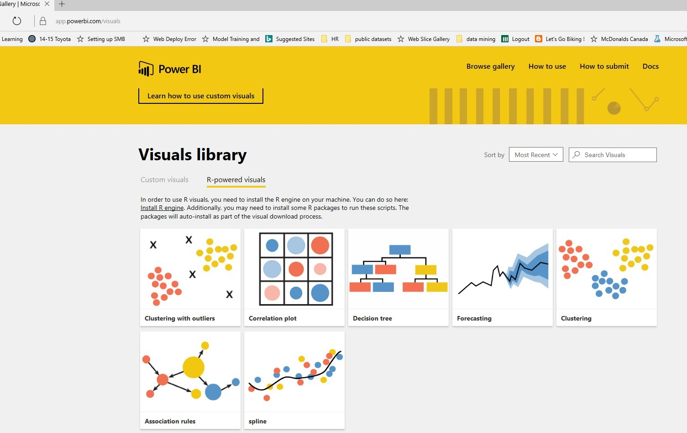

Introduction
One of things I try to do in the field of People Analytics is monitor and try out new tools and technologies that come out that appear to add value to People Analytics.
In doing just that, I came across a very cool and nifty unexpected behavior in one tool- Microsoft Power BI.
Although, many of my previous blogs have been lengthy (by necessity), this one will be quite a bit shorter because my real intent is to show a gem of unexpected behavior I came across because of using the above tool on an HR dataset. While this unexpected behavior is just one example, if it suggests the future of where analytic tool design is heading, it is quite exciting.
If you have been keeping up with what Microsoft is doing in the Data Science/Analytics space, you will know they are doing plenty. And that “plenty” revolves around integrating R into much of their technology.
One of the most recent things I came across was some of their literature and examples of how R is being integrated into their Microsoft Power BI Graphics exploration tool. One of the things you can do in Power BI Desktop is import in “custom visuals’. And it turns out that someone has developed and provided some”R” related custom visuals covering:
Splines
Association Rules
Clustering K Means
Forecasting
Decision Trees
Correlation Plots
· Etc.
These visuals seem to use R “interactively’ in the background as you manipulate choices in the tool in the foreground. This means that the tool goes beyond just traditional ‘slice and dice’ tools- which just give you different cuts of data. The”Beyond” is that it shows you the “results” of your choices-whether the choices you are making are improving things or not.
Huh? What?
Ok maybe the best way to explain is to show by one actual example.
The Example
If you have read some of my previous blogs, you will have come across this one from May 1, 2016 on job classification and R
In it, I demonstrated how we could use several machine learning algorithms in R to try to predict a job classification based on feature information found in traditional job class specifications.
The following link provides the location of the csv dataset used
https://1drv.ms/u/s!AvXQmNu-zPJOsij-zLqDMEkc9qWO
One of machine learning algorithms used in that article was decision trees:
https://1drv.ms/b/s!AvXQmNu-zPJOsjEoCQF_edVGbqOL
In the way, the above graphic was produced, the algorithm ‘rpart’ was run first and then the graphic was produced from that data.
You can tweak the settings for ‘rpart’ and rerun the decision tree graphic and get different results from different settings. But the order is
1.tweak in code
2.run the code
3.produce the graphics
And repeat as necessary
How Does Power BI do it?
The order for producing a decision tree:
1.select the Power BI graphic
2. tweak the graphic
3. look at changes in graphic and the statistical results (yes- the R decision tree algorithm is run for you behind the scenes- each time you tweak the graphic
Let’s See This in Action
1.Grab the csv file from the link provided previously and store locally.
2. if you haven’t already done so download Power BI Desktop and install it:
https://powerbi.microsoft.com/en-us/documentation/powerbi-desktop-get-the-desktop/
3. Install the R custom visuals for Power BI Desktop- the one of interest for this example is the ‘decision tree’
https://app.powerbi.com/visuals/

Please note that R must be installed for these to work- the installation will tell you that.
4. So now you should have R installed, Power BI Desktop installed, the R powered visuals installed. The next step is to launch Power BI desktop.
5.Get Data
6.Import
7. Load the data
8. Now import in the R decision tree custom visual previously downloaded
9. Click the new decision tree icon and enable script visuals10. Now click the check boxes on the right, putting PG as target variable and problem solving and supervision as input variables. A decision tree diagram is produced.
The relative error is .54 with those choices
11. Now add other input variables by clicking more check boxes
The relative error has dropped to .21.
What has just happened?
As you made choices for extra input variable, the decision tree custom R-powered visual has rerun the algorithm behind the scenes for you- showing that you have improved your model. The decision tree shows (based on the data) what rules lead to what prediction of pay grade, and the error associated with those prediction.
This was done with no coding by you.
Closing Thoughts
The whole point of providing this example and in a hands-on way, was to illustrate several things:
People Analytics need not be scary
You can use some tools readily available out there to show your organizations live examples of what’s possible in People/HR Analytics
Being able to interact with your graphics and visuals as the means to carry out algorithms in the background is very powerful and promising
This is intended to demonstrate just one example and one tool. None of the above precludes or dismisses the need for good statistical analysis, R, HR, coding, and data science skills for much more robust, proper and comprehensive People / HR analytics. But tools such as this can be very useful as part of what can be brought to bear for organizations on their analytics journey.